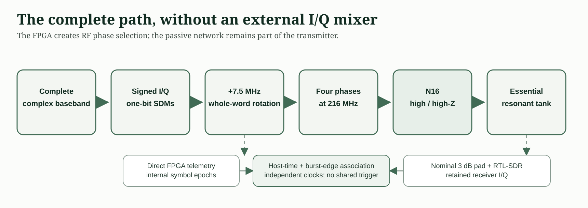
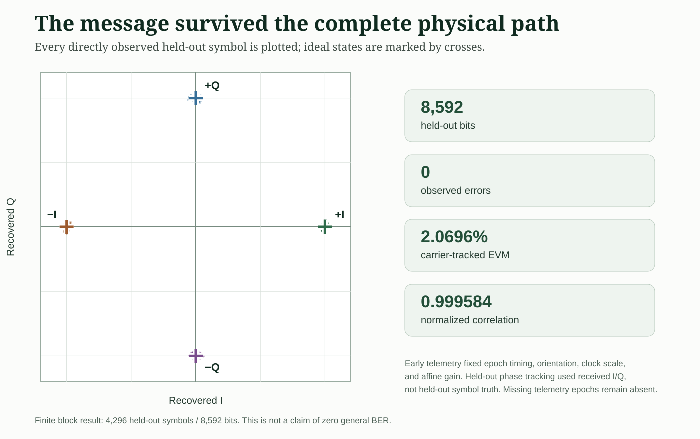
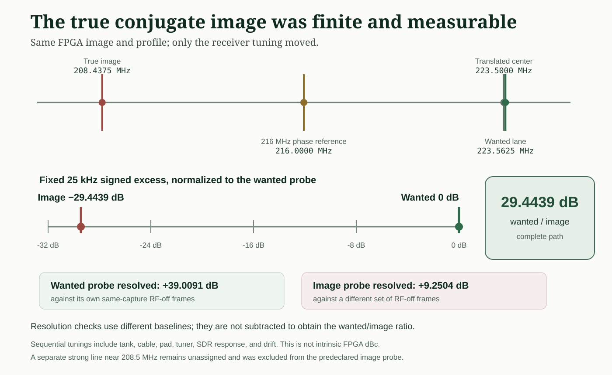
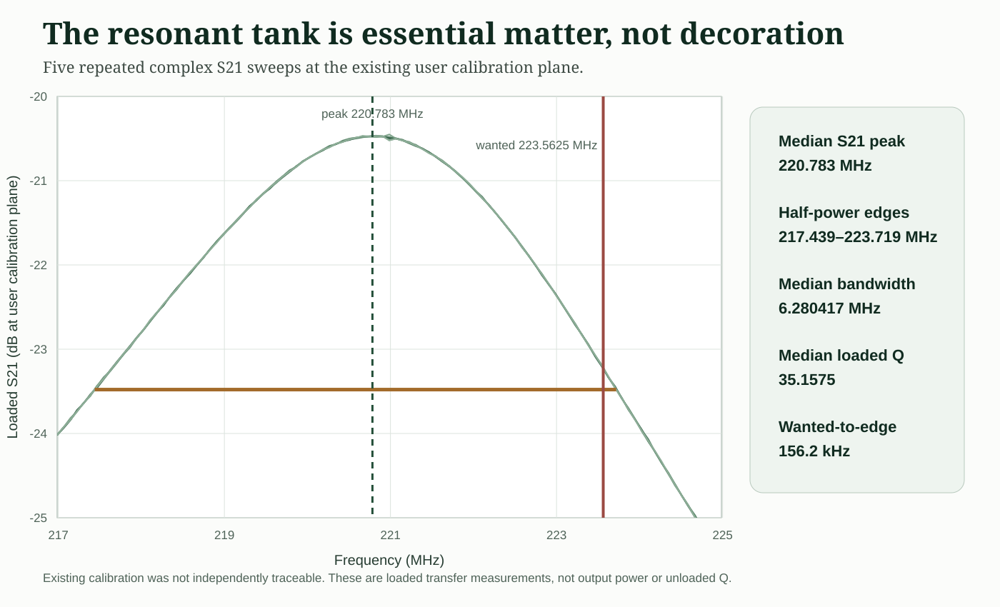
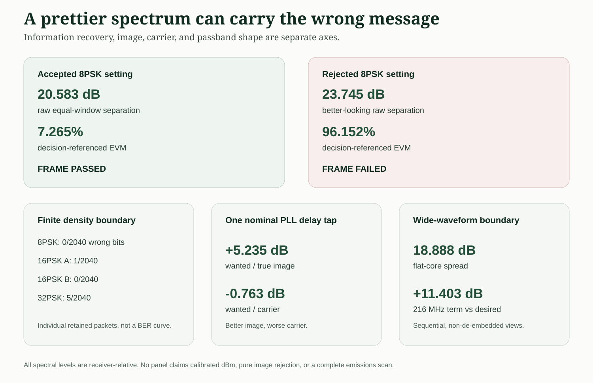

The Signal Path That Ran
“One pin” means one programmable RF signal pad, in addition to the ordinary power, ground, clock, configuration, and measurement connections needed to operate an FPGA. There is no external DAC and no conventional external quadrature mixer.
The new image starts with complete complex baseband. Signed first-order I and Q sigma-delta streams reduce it to two bits. I then rotate that complete two-bit phase word by +7.5 MHz, feed the published four-phase selector at 216 MHz, and switch the pMOS side of HX8K pad N16 between high and high impedance. The resonant tank turns that fast digital boundary into the narrow RF path that reaches the receiver.

Named volatile imageSeed 1 passed its four declared timing domains: 12 MHz, 30 MHz, 108 MHz, and 216.03 MHz. The corresponding reported maxima were 84.78, 115.81, 108.67, and 244.20 MHz.
Bitstream SHA-256: d06d57419bb56282
The image was loaded into volatile FPGA configuration memory. The exact image is identified; its matching final source revision still needs to be committed as a public rebuild package.
The Bits Came Back
The FPGA and SDR ran from independent clocks. Early direct FPGA telemetry established symbol timing, orientation, clock scale, and affine I/Q gain. After that initialization, common-phase tracking followed the received I/Q itself. It did not inspect the held-out QPSK symbols it was about to decide.
Only symbol epochs directly present in both retained streams were scored. The 2,332 telemetry holes were not guessed, filled, or interpolated. That left 4,296 held-out symbols: 8,592 bits, with zero observed errors. The normalized received-to-expected correlation was 0.999584 and carrier-tracked EVM was 2.0696% RMS.

The True Image Is Finite
I kept the bitstream and transmitter profile fixed, then retuned the receiver sequentially to views around the 223.5625 MHz wanted probe and the 208.4375 MHz conjugate-image probe. A fixed 25 kHz signed TX-on-minus-same-capture-off measurement put the wanted signal 29.4439 dB above the true image through the complete tank, cable, pad, tuner, and SDR response, including the intervening drift.
Both probes resolved above their own RF-off baselines. A strong unassigned line nearby at about 208.5 MHz was not silently folded into the result: the declared probe stayed on the mathematical image frequency. Because the views were sequential and the path was not de-embedded, 29.4439 dB is not an intrinsic FPGA image-rejection number or a simultaneous calibrated power ratio.

The Tank Is Part Of The Transmitter
Five complex S21 sweeps put the median transfer peak at 220.7830 MHz. The median upper half-power edge was 223.7187 MHz, the median half-power bandwidth was 6.2804 MHz, and the median loaded Q was 35.16. The 223.5625 MHz wanted lane sits only 156.2 kHz below that upper edge.
That is why the physical network cannot be cropped out of the explanation. The FPGA supplies a switched high/high-impedance boundary rich in edges; the measured tank selects and transfers the RF region used by the receiver.

A Prettier Spectrum Can Carry The Wrong Message
One rejected 8PSK setting produced better raw equal-window separation than the accepted setting—23.745 dB instead of 20.583 dB—yet its frame failed and its decision-referenced EVM reached 96.152%. Looking only at the spectrum would have selected the failed setting.
The denser constellations exposed the same need to measure information directly. Retained 2,040-bit packets produced 0 errors for 8PSK, 1 then 0 errors in two 16PSK runs, and 5 errors for 32PSK. A one-tap phase-reference change improved the wanted/image statistic by 5.235 dB while making the wanted/carrier statistic 0.763 dB worse. The wide waveform's flat-core p10-to-p90 spread was 18.888 dB; in a separate sequential, non-de-embedded receiver view, the 216 MHz term was 11.403 dB above the preceding desired integrated result. These are finite boundary measurements, not a BER curve or a claim that one setting optimizes every axis.

The Cliffhanger Is Gone
The one-pin transmitter is no longer only an intriguing RTL path and an old spectrum screenshot. A named, timing-closed volatile FPGA image carried recoverable QPSK through the switched N16 boundary, the resonant tank, and an independently clocked SDR. The finite image measurement and repeated tank sweep make the physical path visible instead of treating the external matter as a footnote.
This does not yet establish calibrated absolute RF power or field strength, a complete final-configuration emissions scan, range, a turnkey fixture and complete BOM, traceable tank calibration, a committed final measured source revision, or a general zero-error rate. Those are the next measurements—not reasons to leave the result itself unpublished.
Download the measured pointsThe publication bundle contains the plotted held-out points and tank sweeps, plus a machine-readable statement of the headline measurements. Raw receiver data, telemetry, bitstreams, and private bench records remain private.
Evidence record (JSON) · Held-out constellation points (CSV) · Five tank sweeps (CSV)